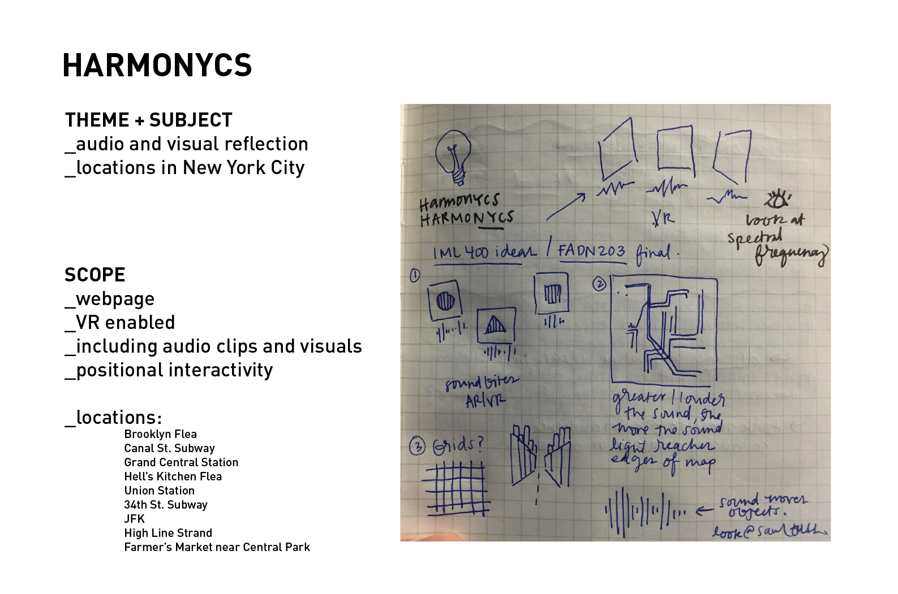

JANELLE WEN
Proposal
Letter of IntentI just recently came back from a trip from NYC for the bi-annual USC Roski New York Study Tour. On the trip we had the opportunity to meet with 16 agencies as well as Roski alumni. It was one of the most valuable experiences in my life. I learned a lot, developed a sense of what I looked for in a career, but most of all, I became addicted to the essence of NYC. During the trip I realized that I wanted to move there eventually. I loved being around the people and experiencing the ambience.

Theme and SubjectThe theme of the site is to create a sort of a seashell to hear the waves from when you're far away from the shore. I want to find a way to interact with audio and elevate the experience.
ScopeI want to create a parallax scrolling environment and use location markers to play sound clips.

Links/research:
http://interactive.nfb.ca/#/outmywindow; http://docubase.mit.edu/project/highrise-out-my-window/ http://interactivehaiku.com/ three.js http://www.sitepoint.com/bringing-vr-to-web-google-cardboard-three-js/ sketchup.com